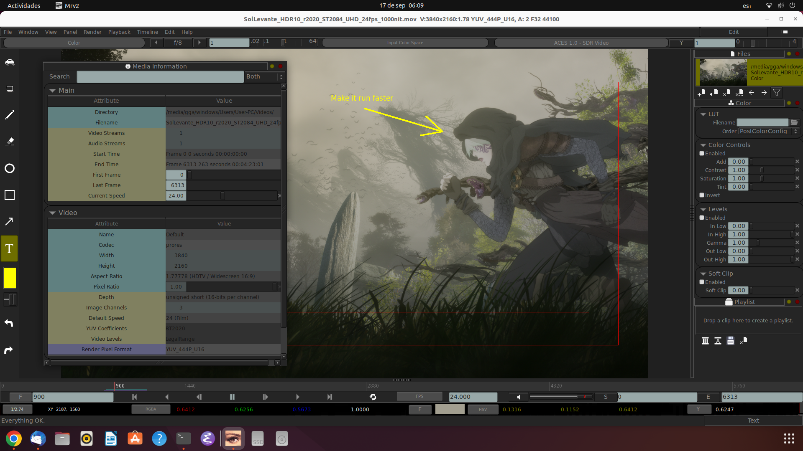

Introducción
¿Qué son mrv2 y mrv2?
mrv2 y vmrv2 son dos herramientas profesionales de código abierto para flipbooks y revisión, destinadas a las industrias de Efectos Visuales, Animación y Gráficos por Computadora.
La diferencia entre mrv2 y vmrv2 es su motor gráfico.
mrv2 utiliza OpenGL, que está mucho más probado en producción, pero está siendo descontinuado en TODAS las plataformas, mientras que vmrv2 utiliza Vulkan, que es el motor gráfico principal en Linux y en las versiones modernas de Windows. macOS cuenta con un motor Vulkan compatible llamado MoltenVK, que utiliza Metal.
En general, vmrv2 reproduce imágenes y videos más rápidamente en las GPU modernas y ofrece compatibilidad con HDR dinámico, mientras que mrv2 es compatible con OpenUSD y utiliza un tone mapping estático para simular HDR, lo que puede producir colores algo incorrectos.
Para ponerlo en perspectiva, Netflix, YouTube y Disney utilizan HDR en sus planes de suscripción premium. Por lo tanto, si estás trabajando en una película para ellos, o en una película que se estrenará en cines, querrás revisar tus dailies con vmrv2.
A partir de ahora, cuando nos refiramos a mrv2, nos referimos tanto a mrv2 como a vmrv2.
mrv2 está enfocado en proporcionar una interfaz intuitiva y fácil de usar, con el motor de reproducción de mayor rendimiento disponible en su código, además de una API de Python para la integración con pipelines y la personalización, ofreciendo una flexibilidad total.
mrv2 puede manejar rápidamente colecciones de fuentes multimedia, cargar formatos de imagen especializados y mostrar imágenes con gestión de color. Los usuarios pueden importar, organizar y agrupar rápidamente medios en playlists y «subsets», reproducirlos y ponerlos en bucle, así como añadir notas de revisión y anotaciones dibujadas, permitiendo visualizar los medios de una manera altamente interactiva y colaborativa. Esto permite flujos de trabajo esenciales para equipos de VFX, animación y otras actividades de posproducción que necesitan poder ver, bajo demanda, las obras que ellos y sus colegas están creando. Por ejemplo, se puede saltar instantáneamente entre las distintas fuentes de medios, inspeccionar píxeles de cerca, realizar comparaciones fotograma a fotograma entre múltiples fuentes, anotar los medios con dibujos y textos, o añadir notas de feedback para compartir.
Las versiones Pro de mrv2 y vmrv2 llevan los dailies a un nuevo nivel mediante el uso de anotaciones de voz y enlaces, para obtener feedback aún más rápido durante el proceso de revisión.
Estas funciones son útiles para las revisiones grupales actuales, pero su acceso también a través de la API de Python permitirá, si estoy en lo cierto, que en un futuro potencial se pueda controlar la GenAI de una manera mucho más intuitiva, «dirigiendo» cómo quieres que se comporten tus personajes mediante tu voz y un puntero. La GenAI todavía no permite hacer esto, pero mrv2 allana el camino.
Además, puedes utilizar las anotaciones de enlaces para tener imágenes vinculadas a un prompt de IA como referencias visuales en cualquier punto de tu timeline, de modo que tu motor de IA pueda realizar una transición entre ellas. Esto también está disponible desde Python para enviarlo a tu servicio de IA favorito, ya sea una herramienta propietaria o local de código abierto, siempre que lo permita.
Aunque utilizo la IA para matemáticas, programación, aprendizaje y resolución general de problemas, no es para mí como artista. Tuve una breve experiencia trabajando en un proyecto de IA, pero decidí que no era lo mío. Además, trabajar en IA a un nivel profundo requiere sólidos conocimientos matemáticos, y las matemáticas no son precisamente mi punto fuerte. Prefiero concentrarme en desarrollar una herramienta que ayude a los artistas a familiarizarse con la IA utilizando los mismos conceptos de revisión que aparecen en los dailies.
Versión Actual: v1.7.6 - Descripción General
Esta versión de la aplicación es una solución de revisión sólida y robusta. mrv2 ha sido desplegado en múltiples estudios y es usado por múltiples individuos diariamente desde Augosto del 2022.
Aquí está un resumen de ellas:
Cargar Medios
Muestre virtualmente cualquier formato de imágen en uso hoy (EXR, TIF, TGA, JPG, PSD, MOV, MP4, WEBM, etc).
Use Drag and drop de los medios del sistema de archivos del escritorio directo a la interfaz de mrv2.
Use la API de Python para construir listas de reproducción con sus propios scripts, controle el reproductor, grabe películas, compare clips y control su integración de su pipeline.
Reproducción de audio para fuentes con una pista de audio es provista con fregado y playback en reverso.
Soporte nativo de .otio permite reproducir líneas de tiempo de OpenTimelineIO con fundidos.
Soporte de USD (Universal Scene Description) de Pixar en OpenGL.
Comunicación en red de NDI.
Listas de reproducción
Cree cualquier número de listas de reproducción, grabándolas en un archivo .otio y editandolo con las herramientas de edición provistas.
Annotaciones y Notas
Agregue notas y annotaciones a los medios en cuadros individuales frames o en todos los cuadros.
Annotaciones en la pantalla pueden ser creadas con herramientas simples de dibujo. Las características de las anotaciones actualmente incluyen:
Color ajustable, opacidad, suavizado y tamaño de los pinceles.
Herramientas para rectángulos, círculos, líneas y flechas.
Goma de borrar para más flexibilidad de dibujo..
Texto editable con tipografías ajustables, posición, tamaño, color y opacidad. El texto soporta UTF-8 para texto internacional (Japonés, etc).
Grabe las anotaciones a disco como una película o con cualquiera de los formatos soportados.
Navegue su colección de archivos a con notas saltando directamente de un cuadro a otro.
Exporte las notas y anotaciones a un documento PDF para compartir con productores.

El Visor
Display preciso de color (OCIO v2 colour management).
Interacción con teclas.
Ajuste la exposición y la velocidad de reproducción.
Herramientas de correción de color para controlar ganancia, gama, tinte, saturación, etc.
Zoom/pan, y display individuales de canales RGBA.
Modos de Comparación: A/B, Wipe, Overlay, Difference, Horizontal, Vertical y Mosaico.
Sobreposición de máscaras predefinidas y guías de áreas seguras.
Segundo visor desplegable para uso con multiples monitores.
Sesiones
Sincronismo de sesiones está provisto para sincronizar uno o más visores en una sesión de revision en una LAN (Red de Área Local). Puede tener un servidor y múltiples clientes y pueden controlar todos los aspectos de mrv2 (seleccionable por el usuario).
Archivos de Sesiones (.mrv2s) pueden ser grabados a disco para grabar el estado de la interfaz y los clips cargados.
Teclas de manejo
Teclas de manejo definidas por el usuario grabadas en un archivo separado (mrv2.keys.prefs) permite cambiar todos los seteos de los menúes y algunos controles del visor.
Características de la API para desarrolladores de pipelines
API de Python
Un intérprete empotrable de Python está disponible para ejecutar scripts dentro de mrv2, agregar o crear nuevas entradas en los menúes.
Controle todos los paneles y la línea de tiempo.